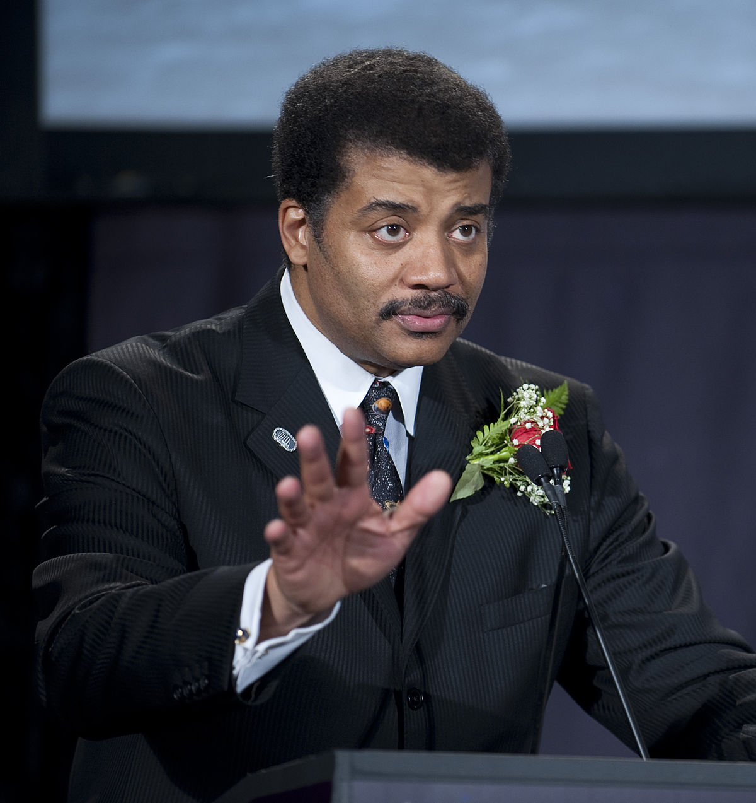

American astrophysicist, cosmologist, author, and science communicator

Highlights of Neil deGrasse Tyson's life:
Born and raised in New York City where he was educated in the public schools clear through his graduation from the Bronx High School of Science.
Tyson went on to earn his BA in Physics from Harvard and his PhD in Astrophysics from Columbia.
Tyson's professional research interests are broad, but include star formation, exploding stars, dwarf galaxies, and the structure of our Milky Way.
Recently Tyson served as Executive Editor and on camera Host & Narrator for Cosmos: A SpaceTime Odyssey, the 21st century continuation of Carl Sagan's landmark television series. The show began in March 2014 and ran thirteen episodes in Primetime on the FOX network, and appeared in 181 countries in 45 languages around the world on the National Geographic Channels. Cosmos, which is also available in DVD and BluRay , won four Emmy Awards, a Peabody Award, two Critics Choice awards, as well as a dozen other industry recognitions.
Tyson is the fifth head of the world-renowned Hayden Planetarium in New York City and the first occupant of its Frederick P. Rose Directorship. He is also a research associate of the Department of Astrophysics at the American Museum of Natural History.
"We are part of this universe; we are in this universe, but perhaps more important than both of those facts, is that the universe is in us."
--Neil deGrasse Tyson
Check out this for more info on Neil deGrasse Tyson.